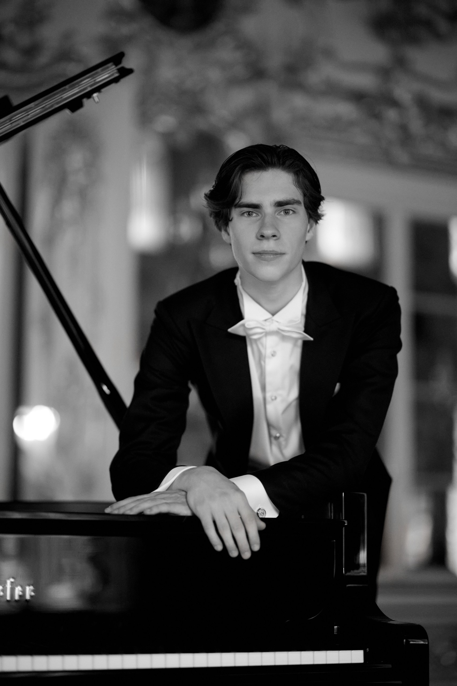
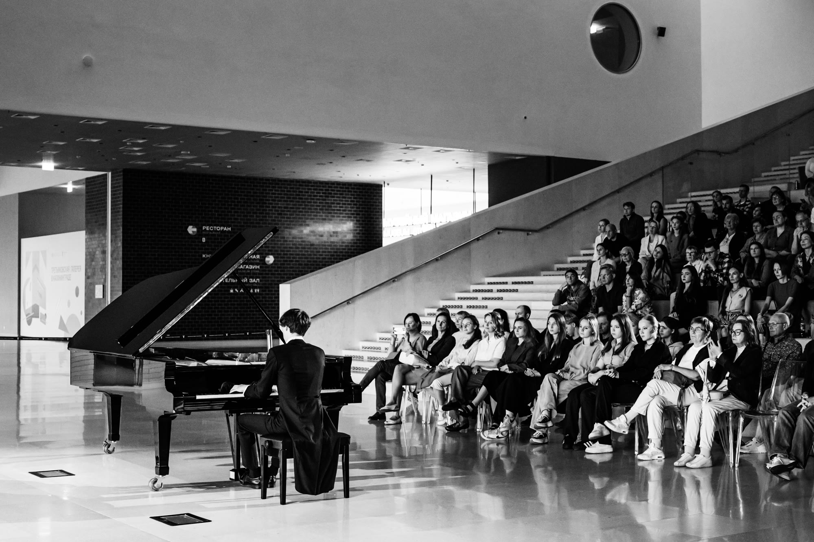

Portrait

Lev Tchefanov est né en 2007 à Moscou, dans une famille de musiciens professionnels, et commence la musique dès l'âge de 4 ans. En 2012, il intègre l'École Centrale de Musique — Académie des Arts du Spectacle, dans la classe de la célèbre pédagogue Kira Alexandrovna Chachkina, première professeure de Mikhaïl Pletnev et de nombreux autres musiciens reconnus. Il poursuit ensuite sa formation pendant plusieurs années auprès de Natalia Viktorovna Bogdanova, responsable du département de piano.
Il termine l'École Centrale de Musique sous la direction du professeur Andreï Vladimirovitch Limaev, lui-même élève de K. A. Chachkina. Lev est aujourd'hui étudiant en première année au Conservatoire d'État de Moscou Piotr Ilitch Tchaïkovski, dans la classe des professeurs Andreï Pisarev et Nikolaï Lugansky.
Le répertoire de Lev est vaste : il couvre aussi bien les œuvres de l'époque baroque et du classicisme viennois que la création contemporaine. Une large place est occupée par les compositeurs romantiques et avant-gardistes, russes comme d'Europe occidentale, dont l'interprétation lui a valu la reconnaissance d'un public moscovite exigeant.
Lev est lauréat de nombreux concours panrusses et internationaux :
1er prix, concours international de piano « Città di Spoleto », Spolète, Italie
1er prix, « Eserski biseri », Ohrid–Struga, Macédoine du Nord
Concours international de piano « La Voie slave », Nessebar, Bulgarie
1er degré, concours-festival international de l'École Centrale de Musique
1er prix, 5e concours international de musique « Melos », Rome, Italie
Festival international de piano Young Classics, Pistoia, Italie
1er prix, concours-festival international « Golden Stars Rain », Vladimir, Russie
Festival international de musique « New Times », Souzdal, Russie
1er prix, 7e festival-concours international « La Lumière de l'étoile de Noël », Kazan, Russie
1er prix, premier concours musico-artistique « Journée ensoleillée », Crimée, Russie
1er prix, concours international « Dune baltique », Kaliningrad, Russie
Il se produit régulièrement dans de nombreuses villes russes — Kazan, Saint-Pétersbourg, Nijni Novgorod, Vladimir, Klin, Koursk, Pouchkino, Stary Oskol, Souzdal, Iaroslavl — ainsi qu'à l'étranger, en Bulgarie, en Grèce, en Italie, en France, en Macédoine, au Luxembourg et en Biélorussie.
En soliste ou avec orchestre, il s'est produit notamment :

Lev collabore avec plusieurs orchestres de Russie et de Grèce, dont récemment l'Orchestre modèle de la Garde nationale de la Fédération de Russie.
Il participe au festival Pianissimo (Moscou, Nijni Novgorod, Saint-Pétersbourg), à l'abonnement « Des pays lointains et des gens » de la salle Rachmaninov du Conservatoire de Moscou Tchaïkovski, à Classique sur la mer (Sotchi, 2024), à la Suite de janvier (Klin, 2025) et au Festival Tchaïkovski. Il prend part aux concerts du Fonds caritatif international Vladimir Spivakov ainsi qu'à ceux du fonds « Art Line ».